중화요리를 좀 찾아다녀 본 분이라면 송추 진흥관이라는 이름을 한 번쯤 들어보셨을 겁니다. 북한산·도봉산 등산객들 사이에서 짬뽕 하나로 이름을 굳힌 노포인데, 그 진흥관의 분점이 김포에도 있다는 걸 알고 직접 다녀왔습니다. 이 글에는 어떻게 찾아가는지, 언제 가면 덜 붐비는지, 대표 세 메뉴를 실제로 먹어보니 어땠는지, 처음 가는 사람은 뭘 시켜야 하는지까지 방문 전에 궁금할 만한 걸 제가 겪은 그대로 정리해 뒀습니다. 김포에서 짬뽕·간짜장 하나 제대로 먹을 곳을 찾고 있다면, 이 글 하나로 갈지 말지 판단이 서도록 써 볼게요. 참고로 이 글의 사진은 전부 방문 당일 매장에서 직접 찍은 것들입니다.
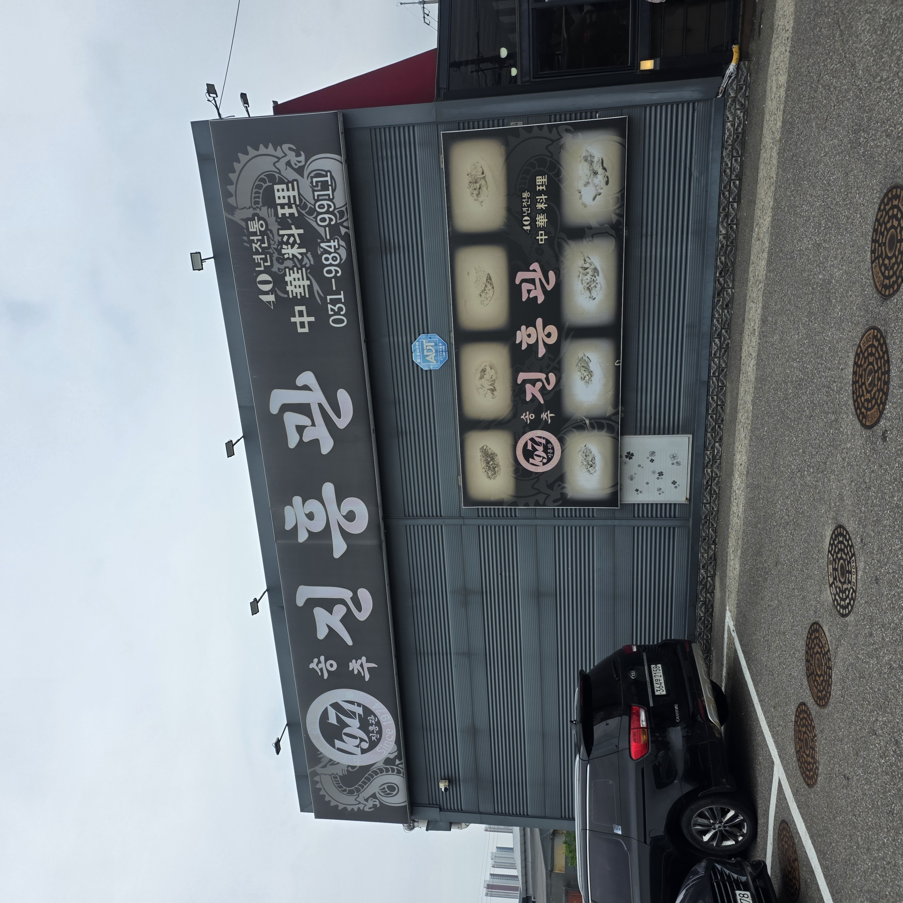
김포 진흥관의 주소는 경기 김포시 양촌읍 김포한강4로 365입니다. 내비게이션에 '진흥관 김포' 또는 이 주소를 찍고 가면 어렵지 않게 도착합니다. 도착해서 건물을 못 찾을 걱정은 크게 안 하셔도 되는 게, 입구에 병마용 석상과 용 조형물이 세워져 있어 멀리서도 '아, 저 집이구나' 하고 바로 눈에 들어오거든요. 평범한 상가 간판 사이에서 확실히 티가 나는 외관이라, 처음 가는 분도 헤맬 일이 적습니다.
차를 가져가도 되는지 궁금한 분들이 많을 텐데, 매장에 주차는 가능했습니다. 다만 정확한 주차 대수나 유·무료 여부, 발렛 운영 같은 세부 사항까지는 제가 확인하지 못했으니, 여럿이 차 여러 대로 움직이거나 주말 피크 시간에 방문할 계획이라면 방문 전 전화(031-984-9911)로 주차 여유를 한 번 확인하고 가시는 걸 권합니다. 이 글에서는 제가 직접 확인하지 못한 부분은 지어내지 않고 '확인 권장'으로 남겨 둡니다.
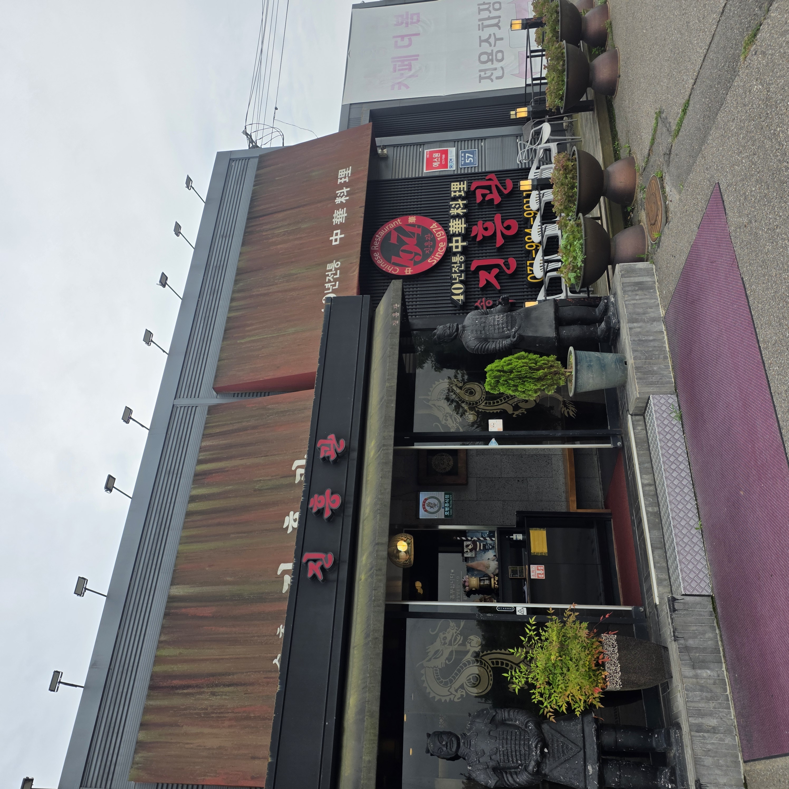
제가 방문한 시간은 점심 피크가 살짝 지났다고 생각한 오후 1시경이었습니다. '이 정도면 좀 빠졌겠지' 하고 갔는데, 웬걸, 넓은 홀이 손님으로 거의 꽉 차 있더라고요. 가족 단위, 어르신, 젊은 손님까지 연령대가 다양하게 섞여 있었는데, 점심 피크가 지난 시간에도 이렇게 자리가 붐빈다는 건 그 자체로 맛집이라는 증거라고 봅니다.
그래서 방문 팁을 하나 드리면, 식사 시간대(정오 전후, 저녁 시간)에는 대기가 생길 수 있다는 걸 감안하고 움직이시는 게 좋습니다. 특히 주말 점심은 가족 단위 손님이 몰릴 가능성이 높으니, 시간 여유가 넉넉하지 않은 날이라면 더더욱 피크를 피하는 편이 마음이 편합니다. 여유롭게 앉아서 먹고 싶다면 점심 피크를 살짝 비켜 이른 점심이나 늦은 오후를 노리는 편이 낫습니다. 참고로 정확한 영업시간과 브레이크타임 운영 여부는 매장 사정에 따라 달라질 수 있으니, 먼 길 오시는 분은 방문 전에 전화로 확인하고 출발하시길 권합니다. 다행히 매장이 넓고 층고도 높아서, 사람이 많아 북적여도 답답하거나 좁게 느껴지지는 않았습니다.
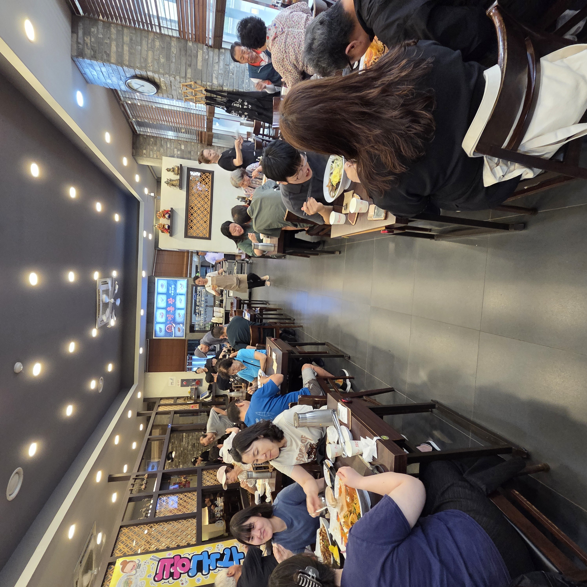
진흥관은 1974년부터 이어온, 간판에도 '40년 전통'을 내건 중화요리 전문점입니다. 앞서 말한 것처럼 등산객들에게 짬뽕 맛집으로 유명한 송추 본점의 명성을 김포점이 잇고 있는 구조예요. 그래서인지 매장에 들어서면 급하게 유행 따라 꾸민 인테리어가 아니라, 병마용 석상과 용 장식, 소나무 분재처럼 중화요리 노포다운 무게감이 있는 소품들이 자리를 잡고 있습니다. 요즘 감성의 세련된 맛집을 기대하고 가면 다소 예스럽게 느껴질 수 있지만, 저는 오히려 이 '오래된 중국집' 특유의 분위기가 음식에 대한 기대를 키워 줬어요.
홀이 넓다는 점은 실사용 관점에서 꽤 중요한 장점입니다. 가족 모임이나 여러 명이 함께 오기 좋고, 어르신을 모시고 가기에도 부담이 없습니다. 테이블 간격이나 층고에 여유가 있어, 아이를 데려온 가족이나 단체 손님이 섞여 있어도 서로 크게 방해받는 느낌이 덜했습니다. 요즘 새로 생긴 트렌디한 맛집을 여러 곳 다녀 봤지만, 이렇게 오랜 세월 한자리를 지켜 온 노포에는 유행을 타지 않는 특유의 안정감이 있습니다. 40년이라는 시간이 그냥 쌓인 게 아니라, 그 세월을 버틴 음식의 기본기가 있으니 가능했겠구나 싶었어요.
진흥관에 왔다면 역시 짬뽕부터 이야기해야죠. 빨갛게 우러난 국물에 오징어·홍합·목이버섯·양파·부추가 푸짐하게 들어가 있었는데, 한 숟갈 떠먹는 순간 정신이 번쩍 들 만큼 칼칼하고 시원한 국물이 확 올라옵니다. 단순히 맵기만 한 국물이 아니라 해물에서 우러난 감칠맛이 깊게 배어 있어서, 매운맛과 시원한 맛이 같이 치고 들어와요. 왜 이 집 짬뽕이 전국구로 이름이 났는지 첫 한 숟갈에 납득이 됐습니다.
면도 국물에 잘 어울렸고, 오징어와 홍합 같은 해물 건더기가 넉넉해서 먹는 내내 심심하지 않았습니다. 얼큰한 국물을 좋아하는 분이라면 밥을 말아 먹어도 좋겠다 싶을 정도로, 국물까지 싹 비우게 되는 그런 짬뽕이었어요. 다만 뒤에서도 다시 짚겠지만 칼칼함이 제법 있는 편이라, 매운 음식을 잘 못 드시는 분은 이 점을 미리 감안하고 주문하시길 권합니다.
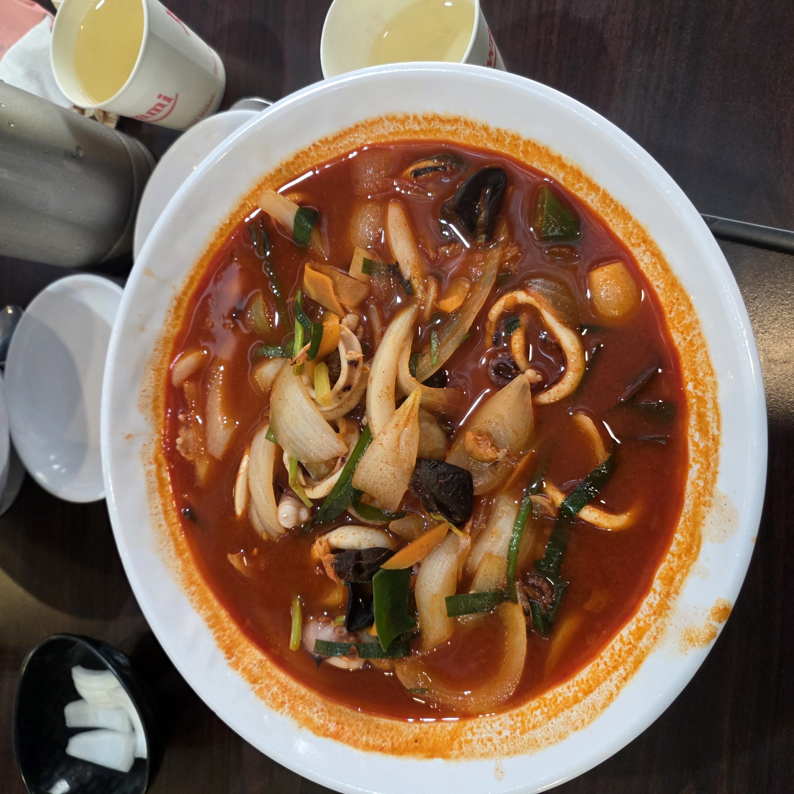
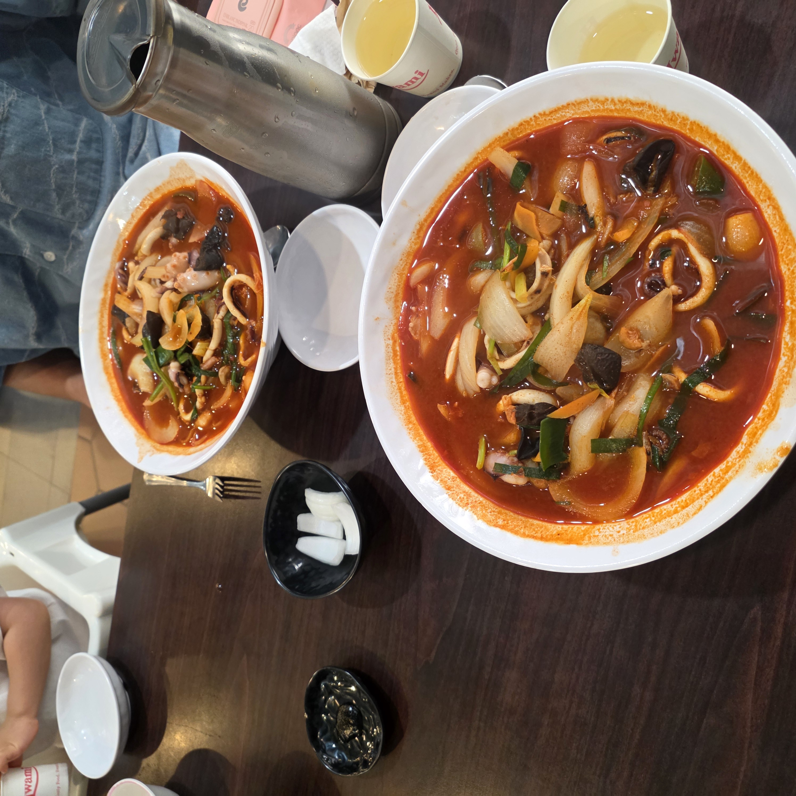
짬뽕만큼 인상 깊었던 게 간짜장입니다. 진흥관 간짜장은 면과 춘장 소스가 따로 나오는 정통 방식이에요. 면은 탱탱하게 삶아져 위에 검은깨까지 올라 정갈하게 나왔고, 춘장 소스에는 양파와 고기가 큼직하게 들어가 갓 볶아낸 불맛과 고소함이 살아 있었습니다. 소스만 한 젓가락 맛봐도 진한 춘장 풍미가 느껴질 정도였어요.
간짜장은 면과 소스가 따로 나오는 만큼 먹기 직전에 슥슥 비벼 바로 먹는 게 제맛입니다. 시간을 두면 면이 붇거나 소스가 식으니, 짬뽕과 간짜장을 함께 시켰다면 간짜장부터 비벼서 뜨거울 때 한 젓가락 하고, 짬뽕 국물을 번갈아 넘기는 순서를 추천해요. 면에 소스를 넉넉히 올려 비비면 갓 볶은 춘장의 진한 풍미가 면 한 올 한 올에 배어들어서, 짬뽕의 칼칼함과 정반대되는 고소하고 든든한 만족감을 줍니다.
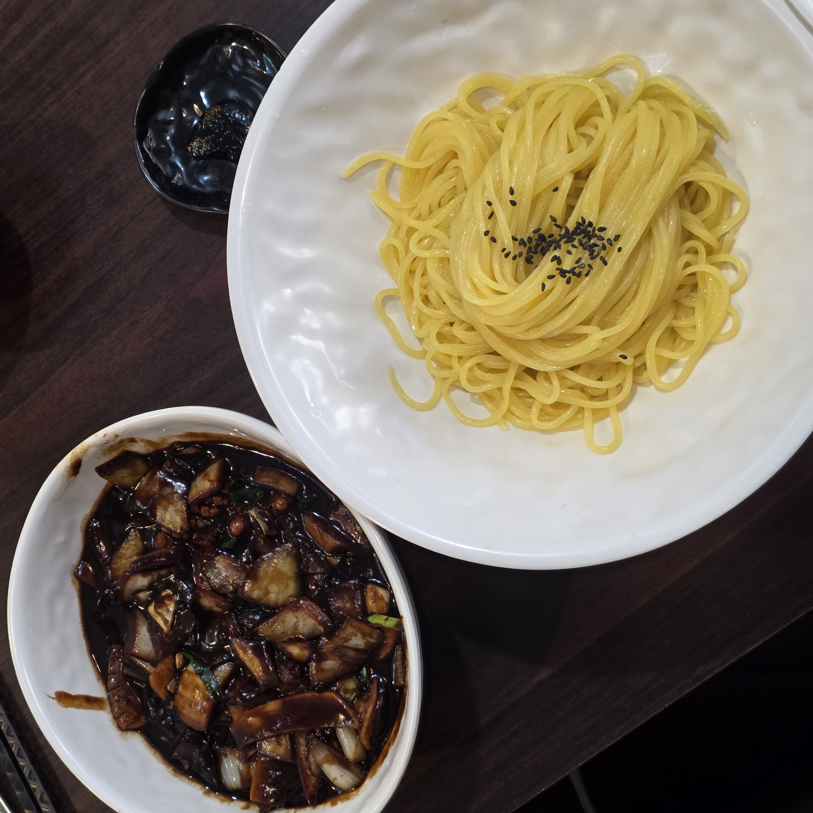
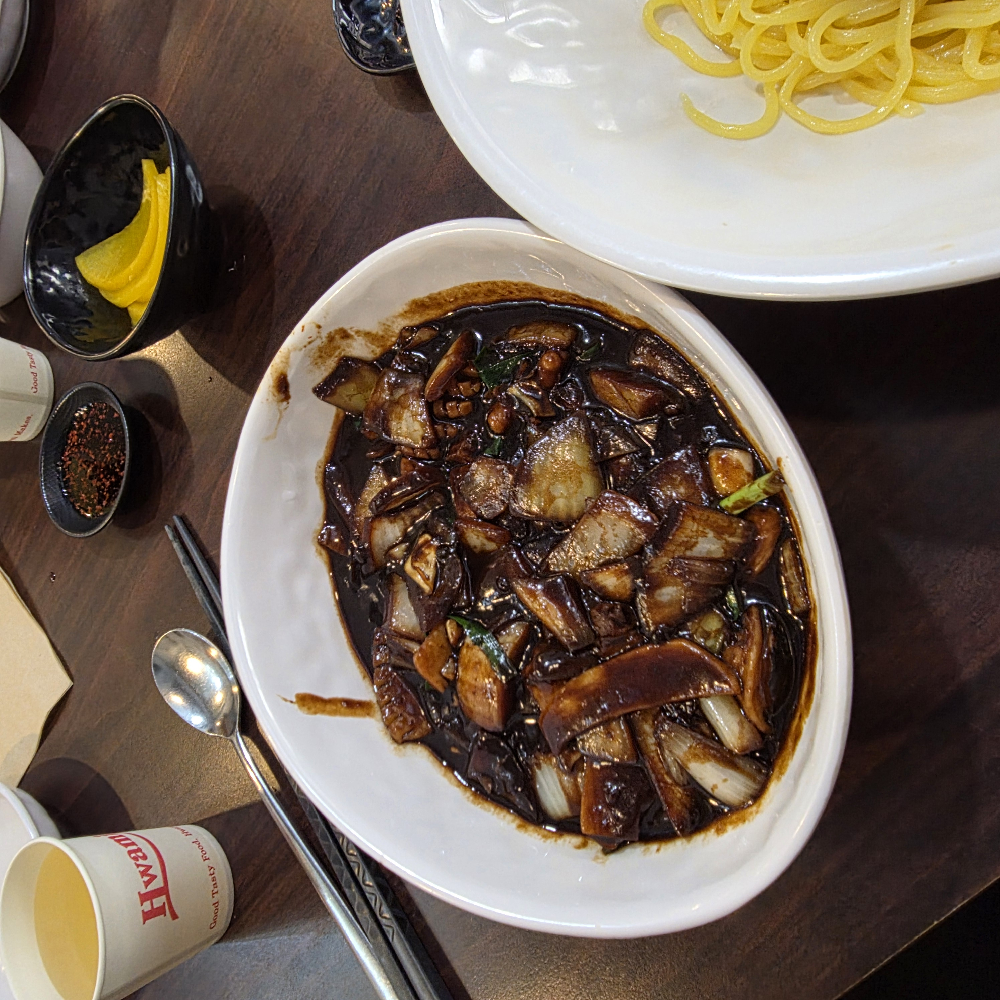
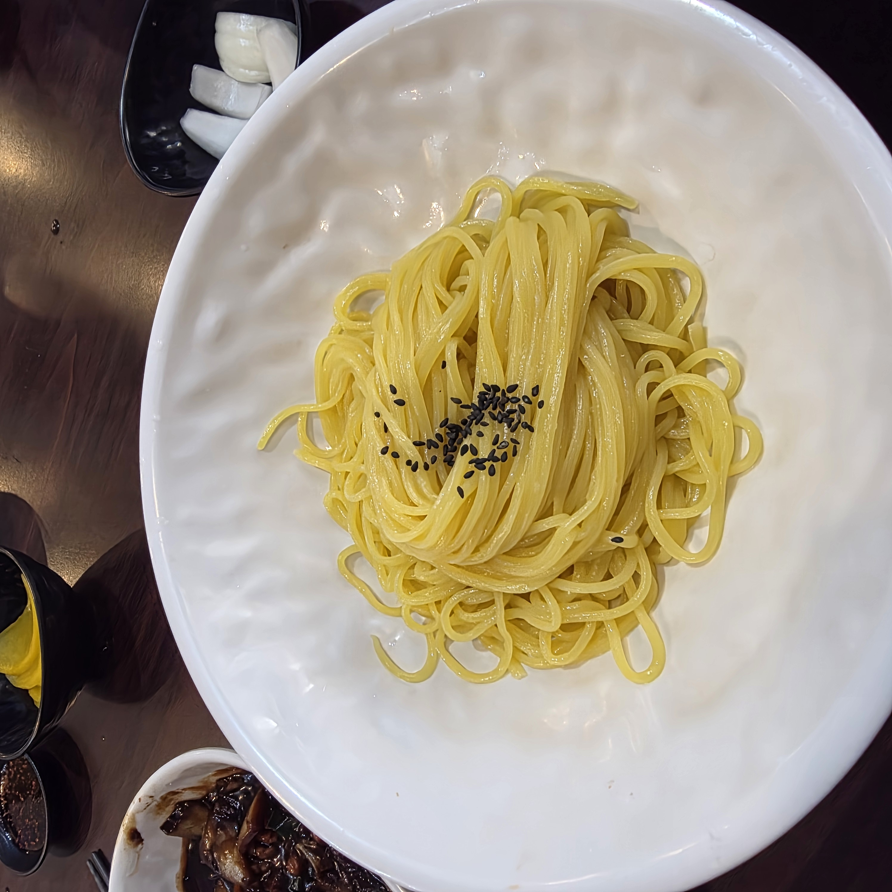
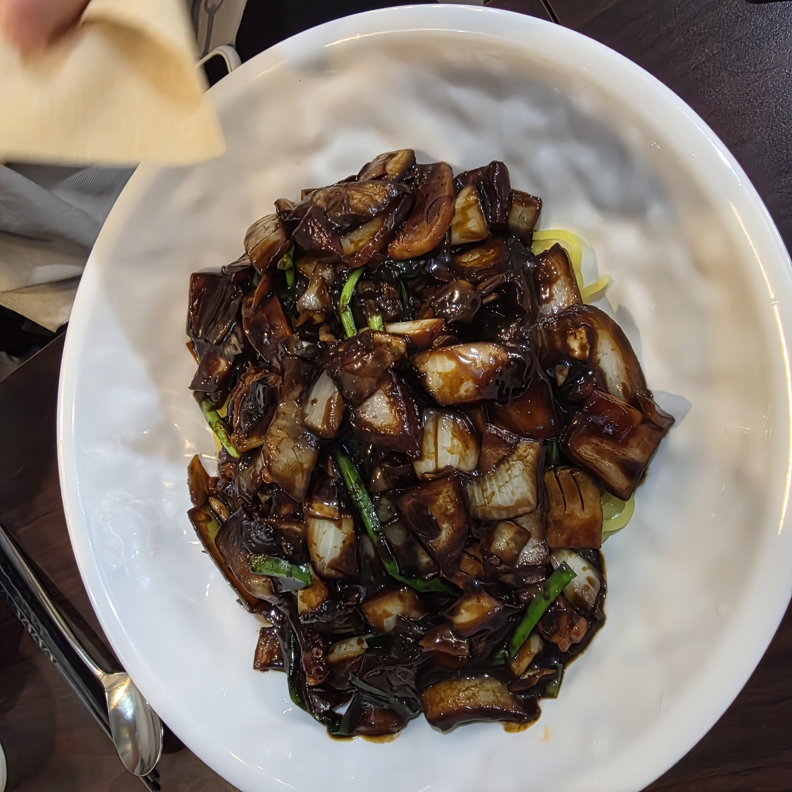
중화요리 상에서 빠지면 섭섭한 탕수육도 시켰습니다. 고기를 큼직하게 썰어 바삭하게 튀겨낸 위에 당근·양배추·양파·파인애플이 어우러진 새콤달콤 소스를 얹은 스타일이에요. 겉은 바삭하고 속은 촉촉한 튀김 상태가 좋았고, 무엇보다 소스의 새콤함과 달콤함 밸런스가 과하지 않게 딱 맞아서 몇 점을 집어도 물리지 않았습니다.
짬뽕의 칼칼함, 간짜장의 고소함, 그리고 탕수육의 새콤달콤함까지 세 가지 결이 다른 맛이 한 상에 모이니 말 그대로 중화요리 삼대장을 제대로 완주한 기분이었어요. 둘이 가서 짬뽕·간짜장에 탕수육 하나를 나눠 먹으면 딱 맞는 구성이라, 처음 방문이라면 이 조합을 기본값으로 잡으시길 추천합니다.
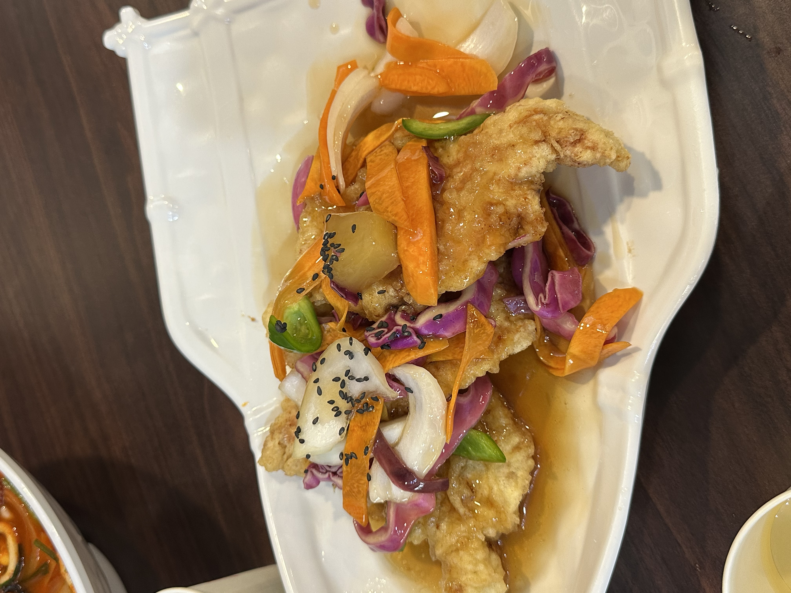
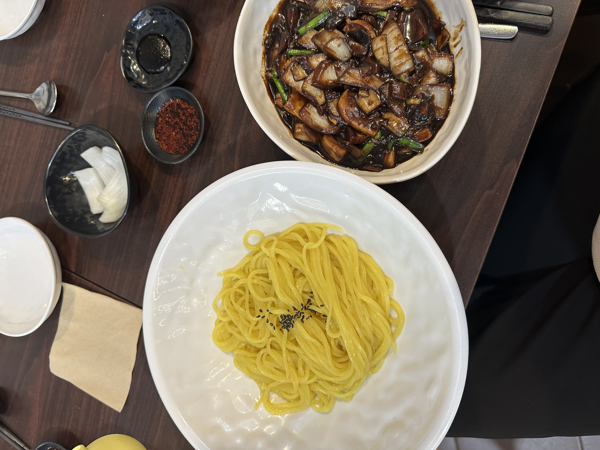
메뉴를 앞에 두고 고민된다면, 세 대표 메뉴의 결이 이렇게 갈린다고 생각하면 편합니다.
· 얼큰하고 시원한 국물이 당기면 짬뽕 — 이 집의 간판이자 전국구로 이름난 메뉴입니다. 실패 없는 선택이지만 칼칼함이 있는 편이라는 점만 기억하세요.
· 고소하고 든든한 면이 좋으면 간짜장 — 면 따로 소스 따로 나오는 정통 스타일이라, 매운 걸 못 먹는 분이나 아이와 함께라면 이쪽이 무난합니다.
· 튀김·요리류를 곁들이고 싶으면 탕수육 — 새콤달콤 밸런스가 좋아 짬뽕·간짜장 어느 쪽과도 잘 어울리는 '함께 시키는' 메뉴입니다.
둘이라면 짬뽕 하나 + 간짜장 하나에 탕수육을 나눠 먹는 조합이 가장 무난하게 세 가지 맛을 다 보는 방법입니다. 매운 걸 잘 못 드시는 분이 섞여 있다면 짬뽕 대신 간짜장 비중을 높이면 되고요. 참고로 정확한 메뉴 구성과 가격은 방문 시점·매장 사정에 따라 달라질 수 있어, 이 글에서는 확인하지 못한 가격을 임의로 적지 않았습니다. 현재 가격은 방문 전 매장이나 네이버 지도·플레이스에서 확인하시는 게 정확합니다.
추천하고 싶은 경우는 이렇습니다. ① 제대로 칼칼한 짬뽕이 당길 때, ② 송추까지 안 가고 김포에서 40년 전통 중화요리를 맛보고 싶을 때, ③ 가족 모임이나 여러 명이 넉넉한 홀에서 편하게 식사하고 싶을 때. 넓은 매장에 주차도 되고 연령대 상관없이 무난한 집이라, 어르신을 모시거나 아이를 데려가기에도 부담이 적습니다.
대신 솔직하게 참고할 점도 남겨둘게요. ① 짬뽕이 칼칼한 편이라, 매운 음식에 약하다면 간짜장 위주로 시키는 게 안전합니다. ② 식사 시간대엔 만석·웨이팅이 생길 수 있으니 피크를 살짝 피하면 여유롭습니다. ③ 인테리어가 요즘 트렌디한 스타일은 아니라, 노포 특유의 예스러운 분위기가 취향에 안 맞는 분도 있을 수 있어요. ④ 제가 정확한 가격·영업시간·주차 세부 사항은 확인하지 못했으니, 이 부분이 중요하다면 방문 전 전화로 체크하시길 권합니다. 그래도 짬뽕·간짜장·탕수육 세 메뉴의 기본기만큼은, 김포에서 다시 찾을 이유로 충분하다고 느꼈습니다. 송추 본점까지 발걸음하지 않고도 그 계보의 맛을 김포에서 볼 수 있다는 것 하나만으로도, 저에게는 충분히 반가운 발견이었어요.
Q. 송추 진흥관과 같은 집인가요?
같은 진흥관 브랜드의 분점입니다. 등산객들에게 짬뽕 맛집으로 유명한 송추 본점의 명성을 김포점이 잇고 있습니다.
Q. 처음 가는데 뭘 시켜야 하나요?
대표 삼대장인 짬뽕·간짜장·탕수육을 추천합니다. 둘이라면 짬뽕 하나·간짜장 하나에 탕수육을 나눠 먹는 조합이 세 가지 맛을 다 보는 방법이에요.
Q. 짬뽕이 많이 매운가요?
칼칼한 편입니다. 맵기만 한 게 아니라 해물 감칠맛이 깊게 배어 시원하지만, 매운 음식에 약하다면 간짜장 쪽이 무난합니다.
Q. 웨이팅이 있나요?
오후 1시에도 만석일 만큼 인기라, 식사 시간대엔 대기가 생길 수 있습니다. 피크를 살짝 비켜 가면 한결 여유롭습니다.
Q. 주차되나요?
매장에 주차는 가능했습니다. 다만 대수·유무료 등 세부 사항은 확인하지 못했으니, 필요하면 방문 전 전화로 확인하시길 권합니다.
Q. 위치가 어디인가요?
경기 김포시 양촌읍 김포한강4로 365이며, 입구의 병마용 석상과 용 조형물을 이정표 삼으면 쉽게 찾습니다.
| 상호 | 진흥관 (김포점) – 40년 전통 중화요리, 송추 진흥관 분점 |
| 주소 | 경기 김포시 양촌읍 김포한강4로 365 |
| 전화 | 031-984-9911 |
| 대표 메뉴 | 짬뽕 · 간짜장 · 탕수육 (가격은 방문 전 확인 권장) |
| 참고 | Since 1974 · 넓은 홀 · 주차 가능 · 식사 시간대 만석 가능 |